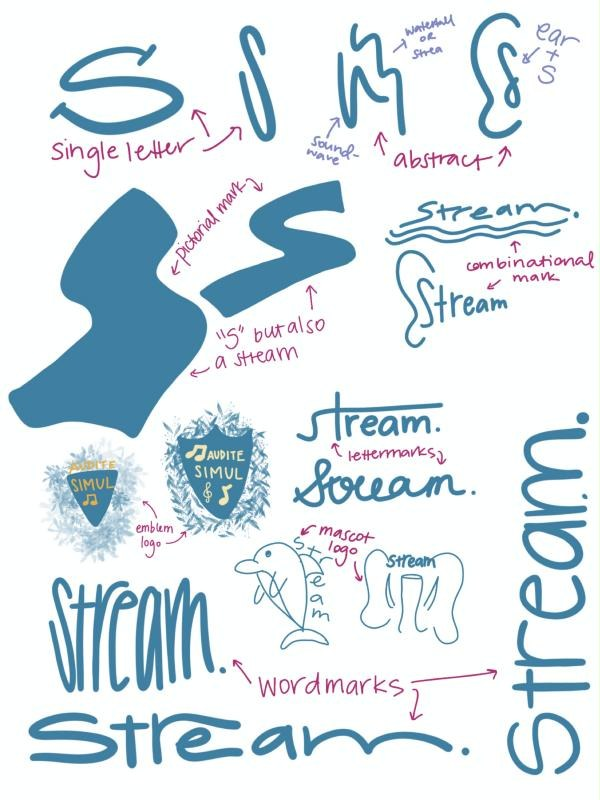
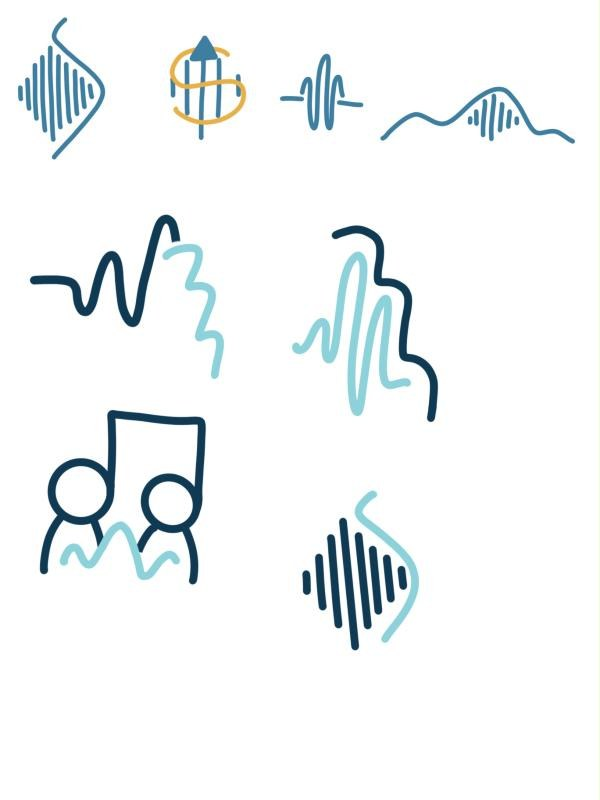
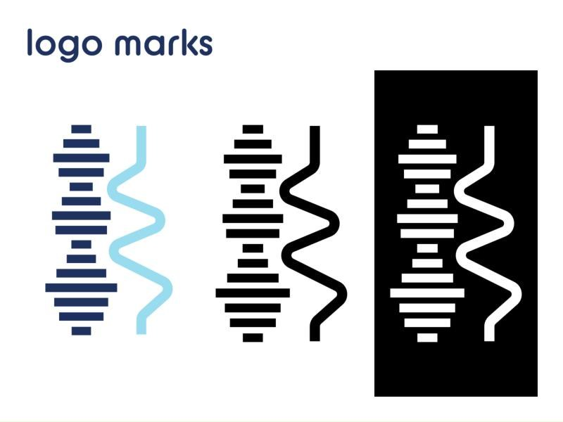
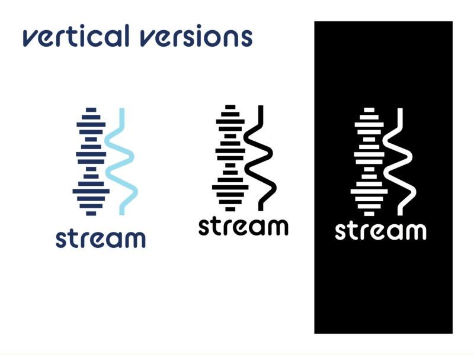
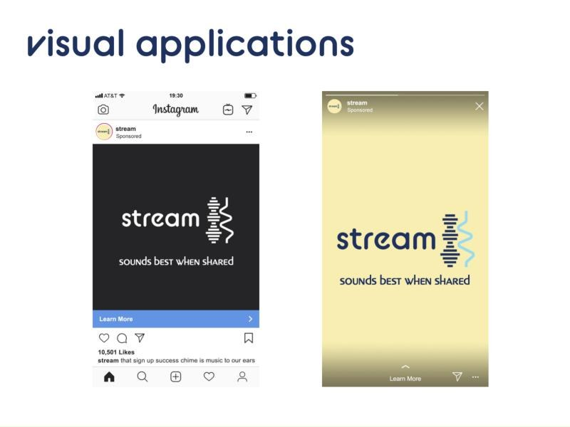

A brand and logo for a made-up music app where friends listen together and control playback at the same time.
Role
Brand and logo designer
Brief
Invent a brand and design its logo
Tools
Procreate, Figma, Illustrator, InDesign, Adobe XD
Deliverables
Logo system, color, type, mockups
01 · Sketches
I wanted the logo to bring together a sound wave, a sense of community and an actual stream. I sketched in Procreate across many logo styles: single letter, abstract, pictorial, emblem, mascot, lettermark and wordmark.
A second round got more fluid, simple and fun, with shades of blue and turquoise to play on the word “stream.” For type, I looked for something memorable, unique, approachable and fun.


02 · Final design
I chose the mark that best combined a modern sound wave with a literal stream that still reads as a sound wave. It also shows two sounds moving in sync, the idea at the heart of the app.


Water-themed colors and bold fonts complete the system.
03 · In use
The brand applied to a mock Instagram ad and story for the app.

From dozens of Procreate sketches to a mark that reads as both a sound wave and a stream.
more of my work